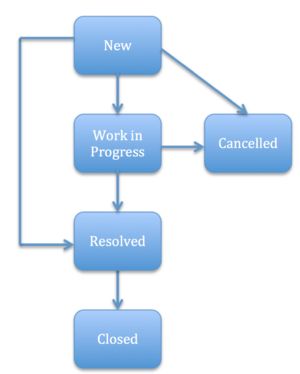
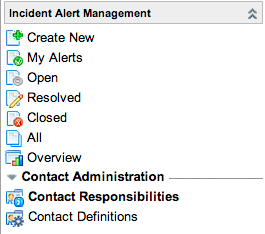

Incident Alert Management
| |
Note: This article applies to Fuji and earlier releases. For more current information, see Incident Alert Management at http://docs.servicenow.com
The ServiceNow Wiki is no longer being updated. Visit http://docs.servicenow.com for the latest product documentation. |
Contents
1 Overview
Incident alert management enables organizations to create and manage communications related to major business issues or incidents. This allows incident alert administrators to bring together all involved users during these events and establish quick and easy communication within this group.
For example, a major issue occurs in an organization's server room, leading to a high-priority incident being raised. The incident could potentially impact all users, so it is important to bring together key representatives and communicate quickly and effectively. An incident alert can facilitate this communication process and help resolve the source incident.
Incident alert management is available starting with the Dublin release.
2 Incident Alert Life Cycle
|  | Incident alerts are created with a New state.
They follow a process that finishes with the Closed or Cancelled state. A series of rules ensure that the alert progression is controlled and standardized.
For more information, see Processing Incident Alerts. |
{kind=link}
2.1 Example Scenario
An example of how incident alerts can be used in an incident management process is:
- An ITIL user creates a high-priority incident regarding a serious issue with the server room.
- The incident alert administrator creates a new incident alert for this source incident.
- As a result of a conference call discussion, a problem is identified based on the incident. This problem is assigned to the problem management team, which agrees to investigate further and identify tasks to improve service and prevent similar incidents from occurring.
- The incident management team resolves the source incident. The source incident may also be closed at this point.
- The incident alert administrator resolves the incident alert.
- The incident alert administrator convenes a post incident review meeting to ensure that all identified tasks are logged and tracked to completion.
- The incident alert administrator can now close the incident alert.
3 Incident Alert Management Features
You can use the Incident Alert Management application to:
- Create an incident alert when a crisis occurs.
- Set up contact responsibilities to identify the individuals who receive automatic notifications when incident alerts are created. Self-service users can subscribe to incident alerts if they want to receive notifications.
- Manage incident alerts to improve communication while dealing with the crisis.
- Use the optional Notify feature to send notifications by SMS messages and voicemails, and to set up conference calls.
- Monitor events and results with the incident alert dashboard and reports.
4 Roles
| Role Title [Name] | Description |
|---|---|
| ITIL user [itil] | Can view the dashboard and incident alerts. Can subscribe to incident alerts. |
| Incident alert administrator [ia_admin] | Can create and edit incident alerts and contact records. |
See User Roles for more details.
5 Menus and Modules
Administrators and incident alert administrators can use all these modules. ITIL users can only use the Open, Resolved and Overview modules.
|  | The Incident Alert Management application contains these modules:
|
{kind=link}
6 Activating Incident Alert Management
Administrators can activate the Incident Alert Management plugin.
| Click the plus to expand instructions for activating a plugin. |
|---|
|
If you have the admin role, use the following steps to activate the plugin.
|